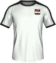
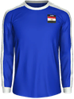
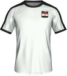
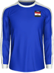

FIFA World Cup™ finals history
Egypt have appeared at two World Cups: Italy 1934, where they were knocked out 4-2 by Hungary, and Italy 1990, where they finished bottom of a closely contested section that included England, the Netherlands and Republic of Ireland.
The team
The Pharaohs last notable success at a major tournament dates back to 2010, when they lifted the CAF Africa Cup of Nations for the seventh time. They missed out on South Africa 2010 and Brazil 2014 following respective play-off defeats by Algeria (1-0) and Ghana (7-3 on aggregate). Internal political upheaval has had a knock-on effect on the performances of the national team, who have now failed to qualify for the last three Cup of Nations. However, the lifting of the suspension of the Egyptian League and the presence of numerous Egyptian players in Europe should soon enable the traditional heavyweights to regain their place among Africa’s elite.
The coach
Having previously coached Valencia and Inter Milan, wily Argentinian Hector Cuper took charge of Egypt in March 2015. His experience at the helm of the Georgian national side in 2008 will likely prove useful in dealing with his new challenge.
The stat
6 – The number of victories obtained by Egypt in their six second-round qualifiers for Brazil 2014.On the verge of glory, the North Africans’ hopes were then shattered by a 7-3 aggregate defeat by Ghana, who qualified at their expense.
The former stars
Abdulrahman Fawzi, Mahmoud Al-Gohary, Mahmoud Al-Khatib, Taher Abouzaid, Ahmed Shobair, Hossam Hassan, Hani Ramzi, Hazem Emam, Mohamed Aboutrika, Ahmed Hassan, Wael Gomaa
 



El Hadary
Fathi
Hegazy
Rabia
Shafy
Elneny
Hamed
Trezeguet
El-Said
Kahraba
Salah